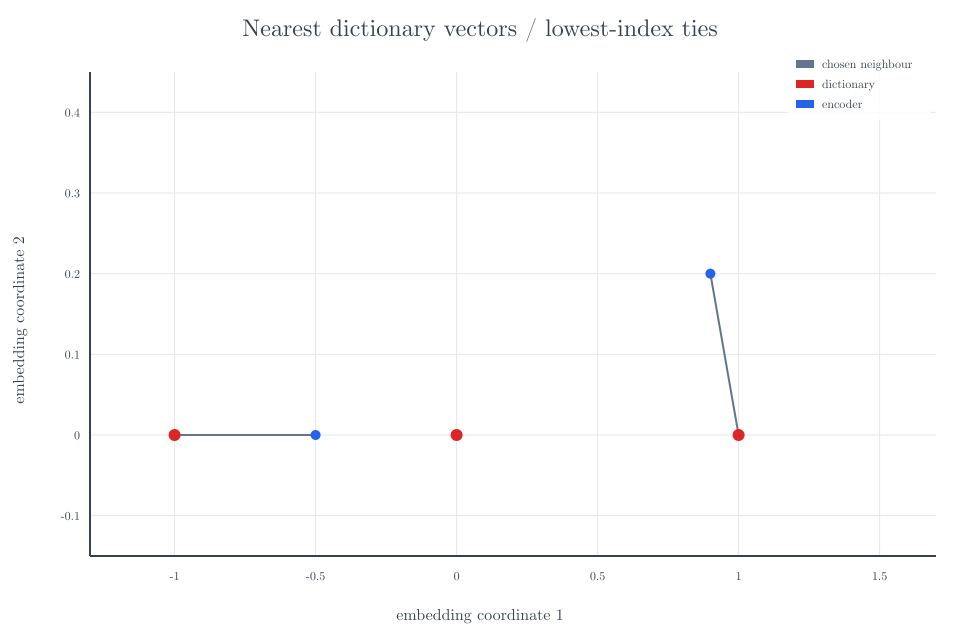
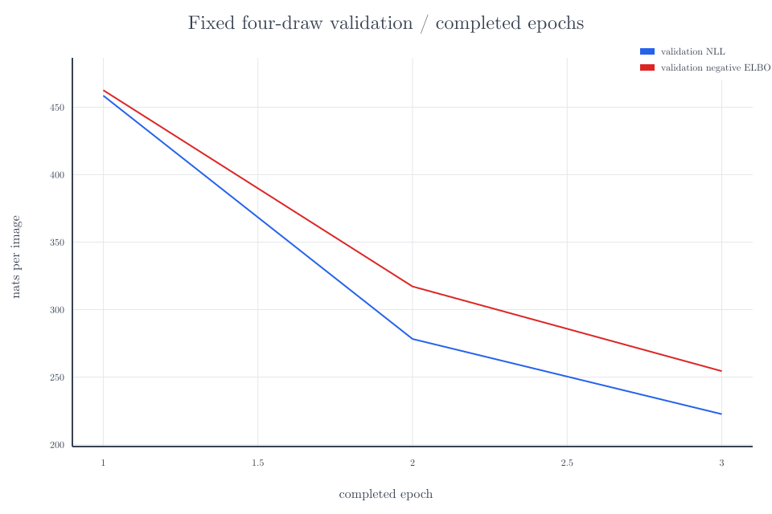
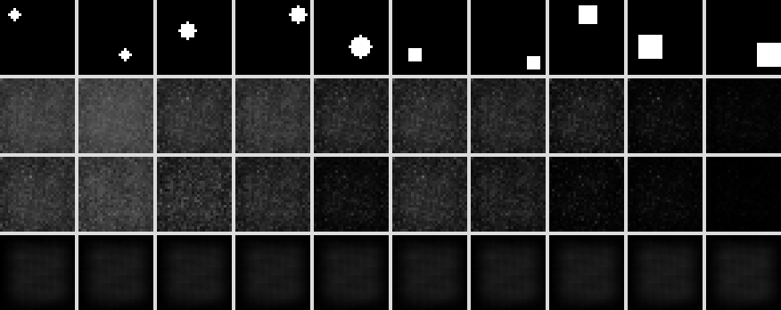
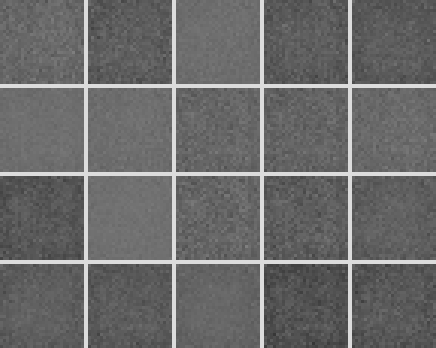

A VAE with a Conditional Affine-Flow Posterior
Abstract
An invertible transformation can turn a diagonal-Gaussian approximate posterior into a more flexible distribution. This report derives two alternating affine couplings, checks their full Jacobian and analytic inverse, and trains a compact784-pixel VAE on294 unique known-factor images. The image encoder conditions the posterior flow; only its final four-coordinate sample reaches the Bernoulli decoder. Twenty-one visible Adam updates and fixed four-draw validation select epoch3. Heldout NLL226.570 plus sampled log-density ratio36.836 gives negative ELBO263.405 nats/image. Decode(f(mu)) MSE0.06882 is worse than the fitting-only mean0.04855. Unfiltered reconstructions and all20 prior codes retain that failure. Posterior flexibility alone proves neither better inference than a matched baseline nor useful semantic generation.
Change the inference family, keep the generative model
[Rezende and Mohamed's Variational Inference with Normalizing Flows](https://proceedings.mlr.press/v37/rezende15.html) constructs flexible approximate posteriors by transforming simpler base samples. Here the base encoder is784→32ReLU→two linear four-coordinate Gaussian heads. Supply epsilon~N(0,I), then z0=mu(x)+exp(l(x)/2)⊙epsilon. Two2+2 affine couplings produce z1 and final z2. Each coupling receives the same **live**32-coordinate image context. This amortizes its parameters without feeding the context directly into the decoder.
The generative model remains p(z2)=N(0,I) and p(x|z2), a4→32ReLU→784-logit Bernoulli decoder. Prior samples are final codes z2~N(0,I), decoded directly. Passing them through an image-conditioned posterior flow would define a different generative model. This is neither an image-space exact-likelihood flow nor a learned flow prior.
#include <dm/dm.hpp>
int main() {
std::filesystem::create_directories("build");
dm::graphics::Diagram d(52, 1200);
dm::graphics::DiagramNodeStyle wide;
wide.width = 4.6;
wide.height = 2.6;
dm::graphics::DiagramStroke dash;
dash.arrow = true;
dash.dashed = true;
d.node("x", {0, 0}, "Binary fitting image\n784 pixels")
.node("h", {6, 0}, "ReLU encoder context\n32 coordinates", wide)
.node("z0", {0, -4}, "Gaussian heads + epsilon\nz0 = mu + exp(l/2) epsilon", wide)
.node("z1", {6, -4}, "Conditional coupling0\nKeep first half", wide)
.node("z2", {12, -4}, "Conditional coupling1\nKeep second half", wide)
.node("dec", {18, -4}, "Final-code-only decoder\nBernoulli probabilities", wide)
.node("density", {12, 0}, "log q2 = log q0 - logdet\nlog p at final z2", wide)
.node("prior", {18, 0}, "Generation: z2 ~ N(0,I)\nNo posterior flow", wide)
.edge("x", "h")
.edge("h", "z0")
.edge("z0", "z1")
.edge("h", "z1")
.edge("h", "z2")
.edge("z1", "z2")
.edge("z2", "dec")
.edge("z2", "density")
.edge("prior", "dec", "", dash)
.save_svg("build/flow_vae_method.svg");
}
One affine coupling by hand
Split z=(a,b). A conditioner sees(a,context), predicts s=0.5tanh(raw) and t, and transforms b'=b exp(s)+t while retaining a. For fixed context,
This uses the affine coupling construction from [Dinh, Sohl-Dickstein and Bengio's Real NVP](https://arxiv.org/abs/1605.08803), adapted to an image-conditioned posterior with bounded log scales. Alternating the unchanged half lets both halves change. The output coordinate order is preserved; swap chooses the unchanged half. Conditioner derivatives matter for gradients and the full Jacobian, even though they do not change the triangular determinant. Context is fixed only for that code-to-code Jacobian: its encoder path must stay live during VAE fitting.
Set s=.2 and t=.3. A square of area4 maps to a rectangle of area4exp(.2). At(.4,−.2), the transformed second coordinate is−.2exp(.2)+.3. A standard-normal base log density loses.2 under this expansion. Evaluating a standard-normal prior at the transformed point gives a *negative* sample logq−logp. Only its expectation under the matching posterior is KL and nonnegative; individual samples and Monte Carlo averages are not clipped.
#include <dm/dm.hpp>
int main() {
namespace n = dm::nn;
const auto t = n::DType::Float64;
n::ParameterStore p(3049, t);
auto z = n::tensor({-1., -1., 1., -1., 1., 1., -1., 1., -1., -1., .4, -.2}, {6, 2}, t),
context = n::zeros({6, 1}, t);
n::models::ConditionalAffinePosteriorFlow(p, "hand", z, context, false, false, 2, 2);
p.set("hand/heads/W", n::zeros({2, 2}, t));
p.set("hand/heads/b", n::tensor({std::atanh(.4), .3}, {2}, t));
auto o = n::models::ConditionalAffinePosteriorFlow(p, "hand", z, context, false, false, 2, 2),
back = n::models::ConditionalAffinePosteriorFlow(
p, "hand", o.value, context, false, true, 2, 2);
if (n::max(n::abs(back.value - z)).item() > 1e-14 ||
std::abs(o.log_determinant.at({0}) - .2) > 1e-14)
return 1;
std::vector<double> a, b, c;
for (int i = 0; i < 5; ++i) {
a.push_back(z.at({i, 0}));
b.push_back(z.at({i, 1}));
c.push_back(o.value.at({i, 1}));
}
auto chart = dm::graphics::RPlot::create();
chart.lines(a, b, "base square", dm::RGBA{37, 99, 235}, 2)
.lines(a, c, "affine image", dm::RGBA{220, 38, 38}, 2)
.title("Affine posterior coupling: area multiplies by exp(.2)")
.x_label("unchanged first coordinate")
.y_label("transformed second coordinate")
.save_svg("build/flow_vae_hand.svg");
const double logq0 = -std::log(2 * std::numbers::pi) - .5 * (.4 * .4 + .2 * .2),
last = o.value.at({5, 1});
const double logp = -std::log(2 * std::numbers::pi) - .5 * (.4 * .4 + last * last);
std::print(
"Second coordinate {:.9f}; forward logdet .2, inverse -.2; sample logq-logp {:.9f}.\n",
last,
logq0 - .2 - logp);
}Second coordinate 0.055719448; forward logdet .2, inverse -.2; sample logq-logp -0.218447672.

Sampled negative ELBO and complete inverse checks
For two couplings f0,f1 with fixed image context h(x), z2=f1(f0(z0;h);h), and
The base diagonal log density is−0.5 sum[(z0−mu)²exp(−l)+l+log(2pi)]. Prior density uses final z2, not z0. This objective uses a sampled log ratio instead of substituting the analytic KL of the base Gaussian. Gradients pass through both changes of variables, both conditioners, shared context, Gaussian heads and decoder. Each scale is bounded by.5; two four-coordinate layers therefore have total logdet in[−2,2]. Float32 uses the original float-rounded log(2pi); Float64 uses full precision. No scale clipping or extra regularizer is added. With binary pixels NLL is Bernoulli negative log likelihood; soft targets would give cross-entropy instead.
The next program saves full4×4 sample Jacobians from four reverse passes, compares their log determinants with the analytic sum, inverts the second layer then the first, and checks zero scale/shift identity. It retains all48 Jacobian entries and unit-flow arrays.
#include <dm/dm.hpp>
namespace nn = dm::nn;
void Require(bool condition, const std::string& why) {
if (!condition)
throw std::runtime_error(why);
}
void Near(double x, double y, double tolerance, const std::string& why) {
Require(std::abs(x - y) <= tolerance, why);
}
struct BetaFactorData {
nn::Tensor images, factors, source;
};
struct VaeNoiseBank {
nn::Tensor standard, epsilon;
};
nn::Tensor Flatten(const nn::Tensor& t) {
return nn::reshape(t, {t.size(0), 784});
}
nn::Tensor Find(const nn::NamedTensors& a, const std::string& key) {
for (const auto& [k, v] : a)
if (k == key)
return v;
throw std::runtime_error(key);
}
std::vector<float> Bytes(const nn::Tensor& t) {
return t.contiguous().to_vector<float>();
}
nn::NamedTensors Arrays(const nn::ParameterStore& p) {
nn::NamedTensors a;
for (const auto& k : p.names())
a.emplace_back(k, p.at(k).detach().clone());
return a;
}
auto Snapshot(const nn::ParameterStore& p) {
return p.flatten();
}
nn::NamedTensors CheckGradients(
const nn::ParameterStore& p,
const std::vector<nn::Tensor>& gs,
const std::string&,
const std::string&) {
nn::NamedTensors a;
Require(gs.size() == p.size(), "all10 gradients");
const auto names = p.names();
for (std::size_t i = 0; i < gs.size(); ++i) {
double norm = 0;
for (double x : gs[i].to_vector<double>()) {
Require(std::isfinite(x), "finite derivatives");
norm += x * x;
}
Require(norm > 0, "nonzero derivative in each tensor");
a.emplace_back(names[i], gs[i]);
}
return a;
}
VaeNoiseBank BetaVaeNoise(std::int64_t n, std::int64_t samples, std::uint32_t seed) {
const auto standard = nn::models::GaussianNoise({n, 4}, samples, seed);
return {standard, nn::cast(standard, nn::DType::Float32)};
}
nn::Tensor BetaVaeNoiseAt(const VaeNoiseBank& bank, int k) {
return nn::select(bank.epsilon, 0, k).contiguous();
}
nn::NamedTensors
Evaluate(nn::ParameterStore& p, const nn::Tensor& images, const nn::Tensor& epsilon) {
nn::NoGradGuard guard;
auto fields = nn::models::FlowVariationalAutoencoder(p, Flatten(images), epsilon).Named();
for (auto& [name, t] : fields) {
t = t.contiguous();
for (double v : t.to_vector<double>())
Require(std::isfinite(v), "finite flow endpoint");
}
return fields;
}
nn::Tensor Decode(nn::ParameterStore& p, const nn::Tensor& z) {
nn::NoGradGuard guard;
return nn::sigmoid(nn::models::GaussianVaeDecode(p, z)).contiguous();
}
std::vector<double>
FlowVaeScore(nn::ParameterStore& p, const nn::Tensor& images, const VaeNoiseBank& bank) {
double nll = 0, ratio = 0, det = 0;
const auto n = images.size(0), samples = bank.epsilon.size(0);
for (int k = 0; k < samples; ++k) {
auto f = Evaluate(p, images, BetaVaeNoiseAt(bank, k));
auto a = Find(f, "nll").to_vector<float>(), r = Find(f, "logratio").to_vector<float>(),
d = Find(f, "logdet").to_vector<float>();
for (int b = 0; b < n; ++b) {
nll += a[b];
ratio += r[b];
det += d[b];
}
}
const double count = double(n * samples);
return {nll / count, ratio / count, det / count, (nll + ratio) / count};
}
double MaxAbsDiff(const nn::Tensor& a, const nn::Tensor& b, int n) {
const auto x = Bytes(a), y = Bytes(b);
double d = 0;
for (int i = 0; i < n; ++i)
d = std::max(d, std::abs(double(x[i]) - y[i]));
return d;
}
double Mse(const nn::Tensor& a, const nn::Tensor& b) {
return nn::mean(
nn::square(
nn::cast(Flatten(a), nn::DType::Float64) -
nn::cast(Flatten(b), nn::DType::Float64)))
.item();
}
double Difference(const nn::Tensor& a, const nn::Tensor& b) {
Require(a.shape() == b.shape(), "matching shapes");
return MaxAbsDiff(a, b, int(a.numel()));
}
nn::Tensor PixelMean(const nn::Tensor& images) {
const auto v = Flatten(images).to_vector<float>();
std::vector<float> mean(784);
for (int j = 0; j < 784; ++j) {
double total = 0;
for (int b = 0; b < images.size(0); ++b)
total += v[b * 784 + j];
mean[j] = float(total / double(images.size(0)));
}
return nn::from_vector(mean, {784});
}
nn::Tensor Constant(const nn::Tensor& row, int count) {
return nn::broadcast_to(nn::reshape(row, {1, 784}), {count, 784}).contiguous();
}
void Checks(const std::filesystem::path& root) {
nn::ParameterStore p(3049);
const std::vector<float> zv{.2f, -.4f, .6f, -.8f, 1.1f, .3f, -.2f, .5f, -.7f, .9f, .4f, -.1f},
cv{.1f, .2f, -.3f, .5f, .8f, -.6f};
auto z = nn::from_vector(zv, {3, 4}).requires_grad_(), context = nn::from_vector(cv, {3, 2});
auto a = nn::models::ConditionalAffinePosteriorFlow(p, "flow0", z, context),
b = nn::models::ConditionalAffinePosteriorFlow(p, "flow1", a.value, context, true);
auto inv1 = nn::models::ConditionalAffinePosteriorFlow(p, "flow1", b.value, context, true, true),
inv0 =
nn::models::ConditionalAffinePosteriorFlow(p, "flow0", inv1.value, context, false, true);
auto ld = a.log_determinant + b.log_determinant,
ild = inv1.log_determinant + inv0.log_determinant;
p.set("identity/heads/W", nn::zeros({16, 4}));
p.set("identity/heads/b", nn::zeros({4}));
auto identity = nn::models::ConditionalAffinePosteriorFlow(p, "identity", z, context);
std::vector<float> jac(3 * 16);
for (int j = 0; j < 4; ++j) {
auto row =
nn::grad(nn::sum(nn::select(b.value, 1, j)), {z}, nn::GradOptions{true, false, false})[0]
.to_vector<float>();
for (int batch = 0; batch < 3; ++batch)
for (int k = 0; k < 4; ++k)
jac[batch * 16 + j * 4 + k] = row[batch * 4 + k]; // full 4x4 incl. conditioners
}
const auto zd = z.detach();
Require(Difference(inv0.value, zd) < 2e-6, "conditional flow inverse recovers all inputs");
Require(Bytes(identity.value) == Bytes(zd), "zero scale/shift is BITEXACT identity");
const auto lds = ld.to_vector<float>(), ilds = ild.to_vector<float>(),
ids = identity.log_determinant.to_vector<float>();
for (int batch = 0; batch < 3; ++batch) {
const double det =
nn::det(nn::cast(nn::select(nn::from_vector(jac, {3, 4, 4}), 0, batch), nn::DType::Float64))
.item();
Require(det > 0, "positive affine coupling determinant");
Near(
std::log(det),
lds[batch],
2e-6,
"fullJacobian determinant equals summed triangular logscales");
Near(lds[batch] + ilds[batch], 0, 2e-6, "inverse logdet cancels forward");
Near(ids[batch], 0, 0, "identity logdet exactly0");
}
nn::save_npz(
(root / "flow_algebra.npz").string(),
{{"z", zd},
{"context", context},
{"mapped", b.value.detach()},
{"logdet", ld.detach()},
{"inverse", inv0.value.detach()},
{"inverse_logdet", ild.detach()},
{"identity", identity.value.detach()},
{"identity_logdet", identity.log_determinant.detach()},
{"jacobian", nn::from_vector(jac, {3, 4, 4})}});
nn::save_npz((root / "unit_flow_arrays.npz").string(), Arrays(p));
std::cout << "conditional flow fullJacobian/inverse/logdensity-sign/identity checks passed"
<< std::endl;
}
int main() {
std::filesystem::create_directories("build/flow_vae");
Checks("build/flow_vae");
}conditional flow fullJacobian/inverse/logdensity-sign/identity checks passed
Native known-factor lattice and explicit randomness
Native beta-vae-assets preparation creates the294 unique binary28×28 circle/square images: shape2×size3×x7×y7. A deterministic residue split gives210 fitting,42 validation and42 heldout records, with disjoint source IDs. The development oracle independently regenerates all230,496 pixels and every factor/source assignment. Factors identify examples only; none conditions the model or selects an epoch. This teaching lattice is not a paper benchmark.
#include <dm/dm.hpp>
int main() {
namespace n = dm::nn;
std::filesystem::create_directories("build/flow_vae");
const std::filesystem::path cache = dm::datasets::data_home();
dm::datasets::prepare_example_data("beta-vae-assets", cache.string());
auto data = n::load_npz((cache / "beta_vae/factors.npz").string());
std::set<int> ids;
std::set<std::vector<int>> pixels;
for (auto& [name, value] : data) {
if (name.ends_with("_images")) {
for (int i = 0; i < value.size(0); ++i)
if (!pixels.insert(n::select(value, 0, i).to_vector<int>()).second)
return 1;
value = n::cast(value, n::DType::Float32);
}
if (name.ends_with("_source_ids"))
for (int id : value.to_vector<int>())
if (!ids.insert(id).second)
return 1;
}
if (ids.size() != 294 || pixels.size() != 294)
return 1;
n::save_npz("build/flow_vae/data.npz", data);
std::filesystem::copy_file(
cache / "beta_vae/manifest.json",
"build/flow_vae/data_manifest.json",
std::filesystem::copy_options::overwrite_existing);
std::print("294 unique binary images and IDs: fit210, validation42, test42.\n");
}294 unique binary images and IDs: fit210, validation42, test42.
All eighteen parameter tensors use ordinary Glorot-uniform weights and zero biases, seed3001. The encoder/Gaussian heads/decoder hold51,416 scalars; each34→16ReLU→4 coupling conditioner adds628, giving52,672. The creation order is encoder, mu, log variance, flow0, flow1, decoder, output. Both inverse calls share the same coupling leaves and add no learned parameters.
BatchOrder(210,32,3007) gives seven updates/epoch, with a final18-row batch:21 over three epochs. Adam uses.003,.9/.999 and1e-8. Fresh per-image training noise uses3042/3043/3044; four fixed draws use fit3011, validation3019 and test3023. Prior codes use3037. GaussianNoise uses local MT19937/Box–Muller Float64 values then Float32 casts; both versions are archived. The model itself draws no noise. Validation averages summed NLL and sampled logq−logp over all four draws and42 images, accumulating Float32 per-row values in Float64, draw then row. Only completed epochs1–3 are candidates; test data never select a checkpoint.
The complete fitting/evaluation program keeps every forward, gradient and optimizer step visible. After fresh-store restore it checks density signs, round trips, fixed-noise repeatability, changed-noise sensitivity, code-only decode and single/batch parity. Every field for zero noise and each of four draws is archived in all three pools. Inverse and prior inference leave all model parameters unchanged.
#include <dm/dm.hpp>
namespace nn = dm::nn;
void Require(bool condition, const std::string& why) {
if (!condition)
throw std::runtime_error(why);
}
void Near(double x, double y, double tolerance, const std::string& why) {
Require(std::abs(x - y) <= tolerance, why);
}
struct BetaFactorData {
nn::Tensor images, factors, source;
};
struct VaeNoiseBank {
nn::Tensor standard, epsilon;
};
nn::Tensor Flatten(const nn::Tensor& t) {
return nn::reshape(t, {t.size(0), 784});
}
nn::Tensor Find(const nn::NamedTensors& a, const std::string& key) {
for (const auto& [k, v] : a)
if (k == key)
return v;
throw std::runtime_error(key);
}
std::vector<float> Bytes(const nn::Tensor& t) {
return t.contiguous().to_vector<float>();
}
nn::NamedTensors Arrays(const nn::ParameterStore& p) {
nn::NamedTensors a;
for (const auto& k : p.names())
a.emplace_back(k, p.at(k).detach().clone());
return a;
}
auto Snapshot(const nn::ParameterStore& p) {
return p.flatten();
}
nn::NamedTensors CheckGradients(
const nn::ParameterStore& p,
const std::vector<nn::Tensor>& gs,
const std::string&,
const std::string&) {
nn::NamedTensors a;
Require(gs.size() == p.size(), "all10 gradients");
const auto names = p.names();
for (std::size_t i = 0; i < gs.size(); ++i) {
double norm = 0;
for (double x : gs[i].to_vector<double>()) {
Require(std::isfinite(x), "finite derivatives");
norm += x * x;
}
Require(norm > 0, "nonzero derivative in each tensor");
a.emplace_back(names[i], gs[i]);
}
return a;
}
VaeNoiseBank BetaVaeNoise(std::int64_t n, std::int64_t samples, std::uint32_t seed) {
const auto standard = nn::models::GaussianNoise({n, 4}, samples, seed);
return {standard, nn::cast(standard, nn::DType::Float32)};
}
nn::Tensor BetaVaeNoiseAt(const VaeNoiseBank& bank, int k) {
return nn::select(bank.epsilon, 0, k).contiguous();
}
nn::NamedTensors
Evaluate(nn::ParameterStore& p, const nn::Tensor& images, const nn::Tensor& epsilon) {
nn::NoGradGuard guard;
auto fields = nn::models::FlowVariationalAutoencoder(p, Flatten(images), epsilon).Named();
for (auto& [name, t] : fields) {
t = t.contiguous();
for (double v : t.to_vector<double>())
Require(std::isfinite(v), "finite flow endpoint");
}
return fields;
}
nn::Tensor Decode(nn::ParameterStore& p, const nn::Tensor& z) {
nn::NoGradGuard guard;
return nn::sigmoid(nn::models::GaussianVaeDecode(p, z)).contiguous();
}
std::vector<double>
FlowVaeScore(nn::ParameterStore& p, const nn::Tensor& images, const VaeNoiseBank& bank) {
double nll = 0, ratio = 0, det = 0;
const auto n = images.size(0), samples = bank.epsilon.size(0);
for (int k = 0; k < samples; ++k) {
auto f = Evaluate(p, images, BetaVaeNoiseAt(bank, k));
auto a = Find(f, "nll").to_vector<float>(), r = Find(f, "logratio").to_vector<float>(),
d = Find(f, "logdet").to_vector<float>();
for (int b = 0; b < n; ++b) {
nll += a[b];
ratio += r[b];
det += d[b];
}
}
const double count = double(n * samples);
return {nll / count, ratio / count, det / count, (nll + ratio) / count};
}
double MaxAbsDiff(const nn::Tensor& a, const nn::Tensor& b, int n) {
const auto x = Bytes(a), y = Bytes(b);
double d = 0;
for (int i = 0; i < n; ++i)
d = std::max(d, std::abs(double(x[i]) - y[i]));
return d;
}
double Mse(const nn::Tensor& a, const nn::Tensor& b) {
return nn::mean(
nn::square(
nn::cast(Flatten(a), nn::DType::Float64) -
nn::cast(Flatten(b), nn::DType::Float64)))
.item();
}
double Difference(const nn::Tensor& a, const nn::Tensor& b) {
Require(a.shape() == b.shape(), "matching shapes");
return MaxAbsDiff(a, b, int(a.numel()));
}
nn::Tensor PixelMean(const nn::Tensor& images) {
const auto v = Flatten(images).to_vector<float>();
std::vector<float> mean(784);
for (int j = 0; j < 784; ++j) {
double total = 0;
for (int b = 0; b < images.size(0); ++b)
total += v[b * 784 + j];
mean[j] = float(total / double(images.size(0)));
}
return nn::from_vector(mean, {784});
}
nn::Tensor Constant(const nn::Tensor& row, int count) {
return nn::broadcast_to(nn::reshape(row, {1, 784}), {count, 784}).contiguous();
}
int main() {
const std::filesystem::path root = "build/flow_vae";
const int epochs = 3;
const auto data = nn::load_npz((root / "data.npz").string());
std::vector<BetaFactorData> pools;
for (const std::string split : {"fit", "validation", "test"})
pools.push_back(
{Find(data, split + "_images"),
Find(data, split + "_factors"),
Find(data, split + "_source_ids")});
std::vector<VaeNoiseBank> noise{
BetaVaeNoise(210, 4, 3011), BetaVaeNoise(42, 4, 3019), BetaVaeNoise(42, 4, 3023)},
training;
auto prior_noise = BetaVaeNoise(20, 1, 3037);
nn::NamedTensors fixed{
{"prior_standard", prior_noise.standard}, {"prior_epsilon", prior_noise.epsilon}};
for (int i = 0; i < 3; ++i) {
const std::string name = i == 0 ? "fit" : i == 1 ? "validation" : "test";
fixed.emplace_back(name + "_standard", noise[i].standard);
fixed.emplace_back(name + "_epsilon", noise[i].epsilon);
}
nn::save_npz((root / "fixed_noise.npz").string(), fixed);
for (int epoch = 1; epoch <= epochs; ++epoch) {
training.push_back(BetaVaeNoise(210, 1, 3041 + epoch));
nn::save_npz(
(root / ("train_noise_epoch" + std::to_string(epoch) + ".npz")).string(),
{{"standard", training.back().standard}, {"epsilon", training.back().epsilon}});
}
nn::ParameterStore model(3001);
{
nn::NoGradGuard guard;
nn::models::FlowVariationalAutoencoder(model, nn::zeros({1, 784}), nn::zeros({1, 4}));
}
nn::OptimizerConfig config;
config.kind = nn::OptimizerKind::Adam;
nn::Optimizer optimizer(model, .003, config);
Require(
model.count() == 52672 && model.size() == 18,
"two conditional affine posterior layers census");
nn::save_npz((root / "initial_arrays.npz").string(), Arrays(model));
nn::BatchOrder order(210, 32, 3007);
std::ofstream history(root / "history.tsv"), batches(root / "batches.tsv");
history.precision(17);
history << "epoch\ttrain_preupdate_negative_elbo\tvalidation_nll\tvalidation_logq_minus_"
"logp\tvalidation_logdet\t"
"validation_negative_elbo\n";
batches << "epoch\tstep\trow\tsource_id\n";
const auto fit_source = pools[0].source.to_vector<int>();
const auto best_path = (root / "best.npz").string();
double best = std::numeric_limits<double>::infinity();
int selected = 0, step = 0;
const auto started = std::chrono::steady_clock::now();
for (int epoch = 1; epoch <= epochs; ++epoch) {
order.begin_epoch();
auto epsilon = BetaVaeNoiseAt(training[epoch - 1], 0);
double sum = 0;
int seen = 0;
for (;;) {
auto rows = order.next();
if (rows.empty())
break;
auto images = nn::take_rows(pools[0].images, rows), e = nn::take_rows(epsilon, rows);
if (step == 0) {
nn::save_npz((root / "first_batch.npz").string(), {{"images", images}, {"epsilon", e}});
auto g = CheckGradients(
model,
nn::grad(
nn::models::FlowVariationalAutoencoder(model, Flatten(images), e).loss,
model.parameters()),
"all flow gradients finite",
"all18posterior/conditioner/decoder tensors receive derivatives");
nn::save_npz((root / "first_gradients.npz").string(), g);
nn::save_npz((root / "first_forward.npz").string(), Evaluate(model, images, e));
}
const auto out = nn::models::FlowVariationalAutoencoder(model, Flatten(images), e);
sum += double(rows.size()) * out.loss.item<float>();
const auto gradients = nn::grad(out.loss, model.parameters());
optimizer.step(gradients);
seen += int(rows.size());
for (auto row : rows)
batches << epoch << '\t' << step << '\t' << row << '\t' << fit_source[row] << '\n';
if (step == 0)
nn::save_npz((root / "first_update_arrays.npz").string(), Arrays(model));
++step;
}
Require(seen == 210, "all fit images once per epoch");
auto score = FlowVaeScore(model, pools[1].images, noise[1]);
history << epoch << '\t' << sum / seen;
for (double value : score)
history << '\t' << value;
history << '\n';
nn::save_npz(
(root / ("epoch" + std::to_string(epoch) + "_arrays.npz")).string(), Arrays(model));
if (score[3] < best) {
best = score[3];
selected = epoch;
model.save(best_path); // four-draw validation Monte Carlo negative ELBO selection
}
std::cout << "epoch" << epoch << ":validation NLL=" << score[0] << ",logratio=" << score[1]
<< ",logdet=" << score[2] << ",negativeELBO=" << score[3] << std::endl;
}
const double seconds =
std::chrono::duration<double>(std::chrono::steady_clock::now() - started).count();
nn::ParameterStore deployed(3001);
{
nn::NoGradGuard guard;
nn::models::FlowVariationalAutoencoder(deployed, nn::zeros({1, 784}), nn::zeros({1, 4}));
}
deployed.load(best_path);
Near(
FlowVaeScore(deployed, pools[1].images, noise[1])[3],
best,
1e-8,
"fresh selected negativeELBO");
const auto before = Snapshot(deployed);
nn::NamedTensors output;
double inverse_error = 0, inverse_logdet_error = 0,
min_ratio = std::numeric_limits<double>::infinity();
for (int split = 0; split < 3; ++split) {
const std::int64_t n = pools[split].images.size(0);
const std::string name = split == 0 ? "fit" : split == 1 ? "validation" : "test";
auto deterministic = Evaluate(deployed, pools[split].images, nn::zeros({n, 4}));
Require(
Bytes(Find(deterministic, "z0")) == Bytes(Find(deterministic, "mu")),
"zero base noise gives z0=mu,not flowed posterior mean");
for (const auto& [key, value] : deterministic)
output.emplace_back(name + "_zero_" + key, value);
for (int k = 0; k < 4; ++k) {
auto f = Evaluate(deployed, pools[split].images, BetaVaeNoiseAt(noise[split], k));
Require(
Bytes(Find(f, "context")) == Bytes(Find(deterministic, "context")) &&
Bytes(Find(f, "mu")) == Bytes(Find(deterministic, "mu")),
"base posterior/context independent of Gaussian draw");
inverse_error = std::max(inverse_error, Difference(Find(f, "z0"), Find(f, "inverse_z0")));
const auto ld = Find(f, "logdet").to_vector<float>(),
ild = Find(f, "inverse_logdet").to_vector<float>(),
ratio = Find(f, "logratio").to_vector<float>(),
logq = Find(f, "logq").to_vector<float>(),
logq0 = Find(f, "logq0").to_vector<float>();
for (std::int64_t b = 0; b < n; ++b) {
Require(std::abs(ld[b]) <= 2.00001, "two-layer bounded logdet within[-2,2]");
inverse_logdet_error = std::max(inverse_logdet_error, std::abs(double(ld[b]) + ild[b]));
min_ratio = std::min(min_ratio, double(ratio[b]));
Near(logq[b], double(logq0[b]) - ld[b], 2e-6, "change-of-variables MINUS forward logdet");
}
for (const auto& [key, value] : f)
output.emplace_back(name + "_draw" + std::to_string(k) + "_" + key, value);
}
}
Require(
inverse_error < 3e-5 && inverse_logdet_error < 2e-5,
"trained conditional flow roundtrip and inverse logdet cancellation");
auto test = Evaluate(deployed, pools[2].images, BetaVaeNoiseAt(noise[2], 0)),
repeat = Evaluate(deployed, pools[2].images, BetaVaeNoiseAt(noise[2], 0)),
other = Evaluate(deployed, pools[2].images, BetaVaeNoiseAt(noise[2], 1));
const auto test_p = Find(test, "probability");
Require(
Bytes(test_p) == Bytes(Find(repeat, "probability")) &&
Bytes(test_p) == Bytes(Decode(deployed, Find(test, "z"))),
"fixednoise repeat and flowed-z-only decode BITEXACT");
Require(
Bytes(Find(test, "z")) != Bytes(Find(other, "z")) &&
Bytes(test_p) != Bytes(Find(other, "probability")),
"changed base noise changes flowed latent and image probabilities");
auto single = Evaluate(
deployed,
nn::take_rows(pools[2].images, {0}),
nn::take_rows(BetaVaeNoiseAt(noise[2], 0), {0}));
const double parity = Difference(Find(single, "probability"), nn::take_rows(test_p, {0}));
Require(parity < 2e-6, "flow VAE single/batch parity");
auto prior_z = BetaVaeNoiseAt(prior_noise, 0);
auto prior = Decode(deployed, prior_z);
nn::save_npz((root / "prior.npz").string(), {{"z", prior_z}, {"probability", prior}});
Require(before == Snapshot(deployed), "all posterior/inverse/PRIOR decoding calls immutable");
nn::save_npz((root / "outputs.npz").string(), output);
nn::save_npz((root / "model_arrays.npz").string(), Arrays(deployed));
auto score = FlowVaeScore(deployed, pools[2].images, noise[2]);
auto mean = Constant(PixelMean(pools[0].images), 42);
const auto zero_p = Find(output, "test_zero_probability");
const double mse = Mse(zero_p, pools[2].images), mean_mse = Mse(mean, pools[2].images);
std::ofstream meta(root / "metrics.json");
meta.precision(17);
meta << "{\"parameters\":52672,\"tensors\":18,\"flow_layers\":2,\"latent_dimensions\":4,"
"\"epochs\":"
<< epochs << ",\"updates\":" << step << ",\"selected_epoch\":" << selected
<< ",\"mc_samples\":4,\"test_nll\":" << score[0]
<< ",\"test_mc_logq_minus_logp\":" << score[1]
<< ",\"test_mean_forward_logdet\":" << score[2] << ",\"test_negative_elbo\":" << score[3]
<< ",\"decode_f_mu_test_mse\":" << mse << ",\"fit_mean_test_mse\":" << mean_mse
<< ",\"maximum_inverse_error\":" << inverse_error
<< ",\"maximum_inverse_logdet_error\":" << inverse_logdet_error
<< ",\"minimum_case_logratio\":" << min_ratio << ",\"single_batch_max_error\":" << parity
<< ",\"training_seconds\":" << seconds << "}\n";
std::print(
"| selected epoch | test NLL | sampled logq-logp | mean logdet | negative ELBO | decode(fmu) "
"MSE | fit mean MSE |\n|---:|---:|---:|---:|---:|---:|---:|\n| {} | {:.9f} | {:.9f} | {:.9f} "
"| {:.9f} | {:.9f} | {:.9f} |\n",
selected,
score[0],
score[1],
score[2],
score[3],
mse,
mean_mse);
}epoch1:validation NLL=458.504,logratio=4.03426,logdet=0.362948,negativeELBO=462.538 epoch2:validation NLL=278.216,logratio=38.8988,logdet=0.997645,negativeELBO=317.115 epoch3:validation NLL=222.532,logratio=31.8556,logdet=1.058,negativeELBO=254.387
| selected epoch | test NLL | sampled logq-logp | mean logdet | negative ELBO | decode(fmu) MSE | fit mean MSE |
|---|---|---|---|---|---|---|
| 3 | 226.569572721 | 36.835837242 | 1.032068204 | 263.405409963 | 0.068817722 | 0.048548290 |
Measured results and weak controls
Epoch3 is selected: heldout NLL226.569573, sampled logq−logp36.835837 and negative ELBO263.405410 nats/image. Mean forward logdet1.032068 is a density correction, not KL or a reconstruction score. Signed sample ratios remain in the saved outputs. Decode(f(mu)) MSE0.068817722 is worse than fitting mean0.048548290. For nonlinear flows, f(mu) is not generally E_q[z]; its decode is not the posterior predictive mean. This single-seed, short run has no matched no-flow ablation, so it does not establish a tighter bound or better inference. Negative ELBO is not exact marginal log likelihood.
#include <dm/dm.hpp>
int main() {
std::ifstream f("build/flow_vae/history.tsv");
std::string line;
std::getline(f, line);
std::vector<double> epoch, nll, elbo;
while (std::getline(f, line)) {
std::istringstream r(line);
double e, train, a, ratio, det, total;
r >> e >> train >> a >> ratio >> det >> total;
epoch.push_back(e);
nll.push_back(a);
elbo.push_back(total);
}
auto chart = dm::graphics::RPlot::create();
chart.lines(epoch, nll, "validation NLL", dm::RGBA{37, 99, 235}, 2)
.lines(epoch, elbo, "validation negative ELBO", dm::RGBA{220, 38, 38}, 2)
.title("Fixed four-draw validation / completed epochs")
.x_label("completed epoch")
.y_label("nats per image")
.save_svg("build/flow_vae_learning.svg");
}
Ten evenly spaced heldout rows floor(k×41/9), without quality filtering, appear below. Rows are original, decode(f(mu)), draw0 posterior probabilities and fitting-only pixel mean. All use fixed gray range[0,1] and nearest-neighbour enlargement. These probabilities are neither sampled binary images nor likelihood estimates.
#include <dm/dm.hpp>
int main() {
namespace n = dm::nn;
auto find = [](const n::NamedTensors& a, const std::string& k) {
for (const auto& [name, v] : a)
if (name == k)
return v;
throw std::runtime_error(k);
};
const auto data = n::load_npz("build/flow_vae/data.npz"),
out = n::load_npz("build/flow_vae/outputs.npz");
std::vector<std::int64_t> rows;
for (int k = 0; k < 10; ++k)
rows.push_back(k * 41 / 9);
auto mean = n::mean(n::reshape(find(data, "fit_images"), {210, 784}), {0}, true);
std::vector<n::Tensor> panels;
for (const auto& x : std::vector<n::Tensor>{
find(data, "test_images"),
find(out, "test_zero_probability"),
find(out, "test_draw0_probability"),
n::broadcast_to(mean, {42, 784})})
panels.push_back(n::reshape(n::take_rows(x, rows), {10, 28, 28, 1}));
n::save_image_grid(
n::concat(panels, 0), "build/flow_vae_reconstructions.png", 10, 0, 1, 4, 220. / 255, 3);
std::print(
"Heldout source IDs {}.\n", n::take_rows(find(data, "test_source_ids"), rows).values_str());
}Heldout source IDs [0, 33, 65, 91, 130, 159, 195, 217, 256, 292].

All20 prior final codes are standard normal, seed3037. Decode them *directly* without posterior flows, image or context. Fixed[0,1] gray and all generated cases expose the short run's limitations. Extra posterior flexibility does not imply useful prior generation.
#include <dm/dm.hpp>
int main() {
namespace n = dm::nn;
for (const auto& [key, value] : n::load_npz("build/flow_vae/prior.npz"))
if (key == "probability")
n::save_image_grid(
n::reshape(value, {20, 28, 28, 1}),
"build/flow_vae_priors.png",
5,
0,
1,
4,
220. / 255,
3);
}
Reproduction evidence and binding scope
The report preserves the source's19 NPZ archives by dtype, shape and every value byte, including all18 fields at zero noise and four draws for every pool, first gradients/update, all epochs, selected arrays, Gaussian banks and the48-entry coupling Jacobian. Batch/source orders and complete validation histories are compared exactly. A separate optional NumPy oracle checks all52,672 first derivatives, the first Float32 Adam step, all posterior/inverse/ prior predictions, explicit noise, density corrections and all three eligible criteria. It performs no fitting, downloads or data preparation.
python3 scripts/check_flow_variational_autoencoder.py docs/mepml/nn/2_autoencoders/2.2_variational_autoencoders/build/flow_vae --json build/nn-report-conversion/flow_vae/oracle.jsonReusable native APIs are ConditionalAffinePosteriorFlow and FlowVariationalAutoencoder; GaussianVaeDecode provides final-code-only inference. C++ outputs and all18 named archive handles own lifetime. Python and R expose the same operations; tests retain fields across collection, exercise explicit host Adam, verify live context derivatives, both coupling directions and target-free decoding. This API addition does not mark incomplete independent Python/R experiment loops as native ports. Full Jacobian and finite-difference checks include context/conditioner paths rather than assuming a diagonal Jacobian. No semantic generation, rate-distortion or benchmark-quality claim follows from this tiny run.